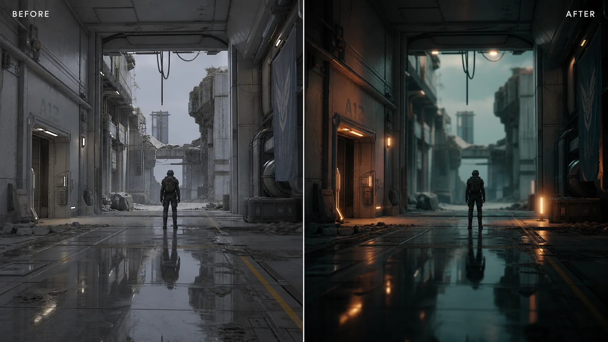
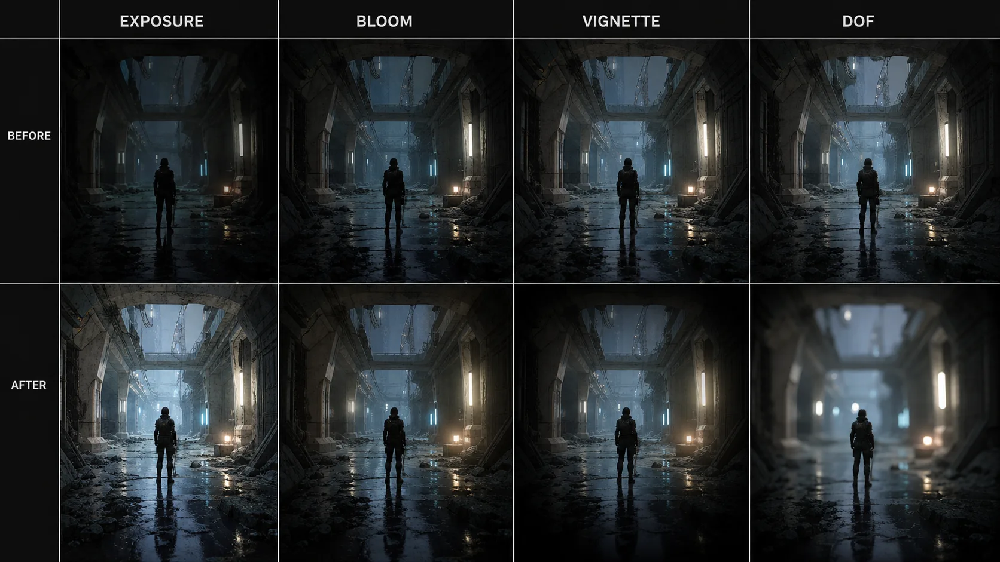
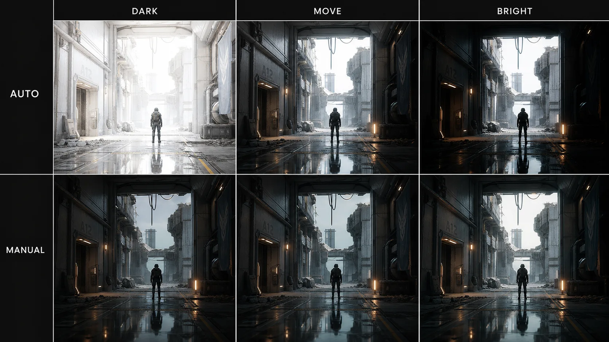
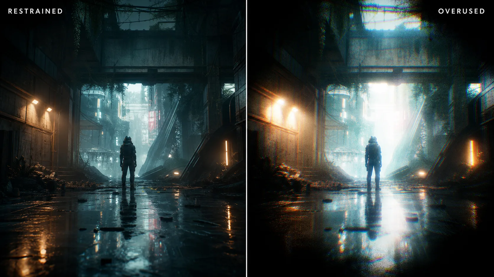

13주차 1교시 — Post Process Volume + 분위기 이펙트 (학생용)
관련 문서
| 관계 | 문서 |
|---|---|
| 강의 계획서 | 강의계획서: Game Engine II |
| 강의 아웃라인 | 13주차 아웃라인: 렌더링 및 컬러 그레이딩 |
| 2교시 자료 | 수업 중 배부 — 컬러 그레이딩 + LUT + Movie Render Queue |
| 3교시 자료 | 수업 중 배부 — 시네마틱 렌더링 워크플로우 실습 |
| 선행 12주차 3교시 | 12주차 3교시: 기말 컨셉 환경 블록아웃 |
- Post Process Volume의 역할(라이팅 위에 얹는 후처리 레이어)을 이해하고 씬에 배치(Infinite Extent)할 수 있다
- Exposure를 Auto와 Manual로 구분하고 시네마틱에서 Manual 고정이 필요한 이유를 설명할 수 있다
- Bloom, Vignette, Depth of Field 등 주요 분위기 이펙트를 작은 값에서 시작해 전후 비교하며 적용할 수 있다
후반부에 들어와 시네마틱 한 편을 단계별로 쌓아왔습니다. 10주차에 캐릭터, 11주차에 카메라, 12주차에 환경을 다뤘습니다. 캐릭터가 있고, 그 캐릭터를 비추는 카메라가 있고, 그 둘이 놓일 무대도 만들었습니다. 13주차는 후반부의 마지막 기술 주차로, 캐릭터·카메라·환경이라는 재료로 만든 장면을 영화의 톤으로 마감하는 주차입니다.
1교시 주제는 그 마감의 첫 단계인 Post Process Volume(후처리 볼륨)입니다. 색을 본격적으로 다루는 컬러 그레이딩과 영상으로 출력하는 Movie Render Queue 는 2교시, 본인 시퀀스에 직접 적용하는 것은 3교시입니다.
도입 — 같은 씬, 다른 분위기

같은 씬을 두 장 비교해 보면, 라이팅도 배치한 에셋도 카메라 앵글도 똑같은데 인상이 완전히 달라 보입니다. 한쪽은 후처리, 즉 Post Process 를 입힌 것입니다. 밝은 부분이 살짝 번지고, 화면 가장자리가 어두워지고, 색감이 한쪽으로 정리되면서 똑같은 재료에 '느낌'이 생깁니다.
영화에서 이 차이는 매우 큽니다. 영화를 보고 '차갑다', '따뜻하다', '낡았다', '꿈같다'고 느끼는 인상의 상당 부분이 라이팅과 함께 후처리에서 만들어집니다. 렌더링은 단순히 '화면을 출력하는' 단계가 아니라, 마지막에 영화의 톤을 결정하는 단계입니다.
한 가지 분명히 해둘 점은, 후처리는 라이팅을 대신하는 것이 아니라는 것입니다. 라이팅이라는 바탕 위에 한 겹 더 얹는 마감이며, 바탕이 부실하면 후처리만으로 보완하기 어렵습니다.
오늘의 목표: 씬에 분위기를 입히는 후처리 도구 Post Process Volume 을 이해하고, 주요 이펙트를 의도를 갖고 쓸 수 있도록 합니다.
핵심 개념 1 — Post Process Volume
Post Process Volume 을 한 문장으로 정의하면, 씬 위에 한 겹 얹는 화면 효과 레이어입니다.
포토샵의 '보정 레이어'를 떠올리면 이해하기 쉽습니다. 사진이 한 장 있고, 그 위에 밝기·색감·번짐 같은 보정을 레이어로 얹되 원본 사진은 그대로 둡니다. Post Process Volume 도 그 방식에 가깝습니다. 우리가 만든 3D 씬은 그대로 두고, 그 위에 화면 효과를 한 겹 입히는 것입니다.
그래서 후처리에는 좋은 점이 있습니다 — 언제든 되돌릴 수 있습니다. 효과가 마음에 들지 않으면 끄면 됩니다. 씬 자체를 건드리는 것이 아니므로 부담 없이 실험해볼 수 있는 단계입니다. 이 후처리를 담는 그릇이 Post Process Volume(줄여서 PPV)이라는 액터입니다.
PPV 를 씬에 배치하기
PPV 는 레벨에 놓는 액터입니다. 12주차에 환경 에셋을 배치할 때 쓰던 Place Actors 패널에서 가져옵니다.
배치 절차
- 1. 에디터 상단/좌측의 Place Actors 패널을 연다
- 2. Volumes 카테고리를 찾는다 (라이팅·트리거 등 각종 볼륨이 모여 있는 곳)
- 3. Post Process Volume 항목을 뷰포트로 드래그해 레벨에 배치한다
- 4. World Outliner(아웃라이너)에
PostProcessVolume액터가 추가됐는지 확인한다
배치하면 처음에는 작은 상자 모양으로 나옵니다. 그런데 이 상태로는 효과가 그 상자 안에 들어갔을 때만 적용됩니다. 카메라가 상자 밖으로 나가면 효과가 사라집니다. 시네마틱에서는 카메라가 씬 여기저기를 돌아다니므로 효과가 켜졌다 꺼졌다 하면 곤란합니다. 그래서 다음 설정이 중요합니다.
Infinite Extent (Unbound) — 레벨 전체에 적용
PPV 를 선택하고 디테일 패널을 보면 Infinite Extent (Unbound) 라는 체크박스가 있습니다. 오늘 PPV 에서 가장 중요한 설정입니다.
설정 절차
- 1. 아웃라이너 또는 뷰포트에서 배치한 Post Process Volume 을 선택한다
- 2. 디테일 패널에서 Infinite Extent (Unbound) 항목을 찾는다
- 3. 체크박스를 켠다
이것을 켜면 PPV 가 '상자 안'이라는 경계를 버리고, 카메라가 어디에 있든 레벨 전체에 효과가 적용됩니다. 시네마틱에서는 씬 전체에 일관된 톤을 입히는 것이 보통이므로 PPV 를 쓸 때 거의 항상 켭니다.
끄면 상자 안에서만 효과가 들어갑니다. 이것도 쓸모가 있습니다. 예를 들어 '동굴 안에 들어가면 화면이 어두워지고 푸르스름해진다' 같은 공간별 분위기 전환을 만들 때는 일부러 끄고 상자 크기를 조절합니다. 다만 13주차 목표는 시퀀스 전체에 톤을 입히는 것입니다.
13주차 실습에서 PPV 를 쓸 때는 Infinite Extent 를 켭니다. 그래야 효과가 볼륨 상자 안에 갇히지 않고 레벨 전체에 적용됩니다.
Infinite Extent (Unbound) 는 보통 Post Process Volume Settings 섹션에 있습니다. 디테일 패널의 항목 이름·위치는 UE 버전에 따라 다를 수 있으므로 기능으로 찾으세요.
Priority — 볼륨이 겹칠 때
같은 디테일 패널에 Priority 라는 숫자 필드가 있습니다. PPV 가 여러 개 겹쳤을 때 어느 것을 우선할지 정하는 우선순위입니다.
PPV 가 하나뿐이면 크게 신경 쓰지 않아도 됩니다. 예를 들어 '레벨 전체에는 차가운 톤(PPV 1개), 특정 방에는 더 강한 붉은 톤(PPV 2개)'처럼 겹쳐 쓸 때, Priority 숫자가 높은 볼륨이 우선 적용됩니다. 1교시 실습은 PPV 하나로 진행하므로, '겹치면 숫자가 큰 볼륨이 우선 적용된다' 정도만 알아두면 됩니다.
Post Process Volume vs Cine Camera — 후처리는 PPV 한 곳에서
후처리 설정을 넣을 수 있는 곳은 사실 두 군데입니다. 하나는 PPV, 다른 하나는 9주차에 쓴 Cine Camera 액터 자체입니다. Cine Camera 의 디테일 패널에도 Post Process 설정이 들어 있습니다.
둘 다 후처리를 넣을 수 있다 보니, 양쪽을 동시에 만지면 어느 쪽 설정이 적용된 것인지 추적이 어려워집니다. 그래서 이 수업에서는 후처리를 PPV 한 곳에서만 다룹니다. 카메라 쪽 Post Process 는 '있다'는 것만 알아두고 건드리지 않습니다.
단, 9주차에 배운 카메라의 초점(Focus Distance·Aperture)은 카메라 고유 기능이라 카메라에서 다룹니다. 이 점은 잠시 뒤 Depth of Field 에서 다시 나옵니다.
핵심 개념 2 — 주요 분위기 이펙트
PPV 라는 그릇이 준비됐으니, 그 안에 담을 효과들을 봅니다. 오늘 다룰 주요 이펙트는 네 가지 — Exposure, Bloom, Vignette, Depth of Field 입니다.
| 이펙트 | 역할 |
|---|---|
| Exposure | 화면 전체 밝기를 안정적으로 제어 |
| Bloom | 밝은 영역의 빛 번짐을 표현 |
| Vignette | 화면 가장자리를 어둡게 해 시선을 중앙으로 유도 |
| Depth of Field | 초점 밖 영역을 흐리게 해 중요한 피사체를 강조 |

Exposure(노출) — Auto vs Manual
첫 번째이자 오늘 가장 중요한 이펙트는 Exposure(노출)입니다. 5주차 라이팅 시간에 다룬 노출 — 카메라가 받아들이는 빛의 양, 즉 화면 전체의 밝기입니다. 언리얼에는 노출을 정하는 방식이 Auto Exposure 와 Manual 두 가지가 있고, 이 차이가 시네마틱에서 중요합니다.
Auto Exposure(자동 노출) — 카메라가 화면의 밝기를 보고 자동으로 노출을 맞춰줍니다. 사람 눈과 비슷합니다. 어두운 방에 있다가 밝은 곳으로 나가면 눈이 적응하면서 점점 잘 보이게 되는데, Auto Exposure 가 그것을 흉내 냅니다. 게임 플레이에는 이것이 좋습니다 — 플레이어가 동굴에서 바깥으로 나갈 때 자연스럽게 밝기가 적응됩니다.

그런데 시네마틱에서는 이것을 주의해야 합니다. 카메라가 어두운 복도에서 밝은 창가로 움직이는 시퀀스를 Auto Exposure 로 두면, 카메라가 움직이는 동안 화면 밝기가 출렁입니다. 어두운 곳을 비추면 밝아지고, 밝은 곳을 비추면 어두워지면서, 라이팅으로 정성껏 잡은 밝기가 다시 조정됩니다. 한 컷 안에서 밝기가 계속 바뀌면 의도하지 않은 흔들림처럼 보이고 화면의 완성도가 낮아 보입니다.
Manual(수동) — 그래서 시네마틱에서는 Manual 로 갑니다. Manual 은 노출을 한 값으로 고정합니다. 카메라가 어디를 비추든 화면 밝기가 정한 값 그대로 유지되어, 라이팅으로 잡은 밝기가 안정적으로 살아 있습니다.
시네마틱은 Exposure 를 Manual 로 고정합니다. 데모에서도, 3교시 실습에서도 이것을 가장 먼저 합니다.
노출 고정은 보통 PPV 의 Exposure 섹션에서 Metering Mode 를 Manual 로 두거나, Min/Max Brightness(EV100)를 같은 값으로 묶어 잠그는 방식입니다. 항목 이름은 UE 버전에 따라 다를 수 있으며, 핵심은 '노출을 한 값으로 고정한다'는 결과입니다.
Bloom(블룸) — 빛의 번짐
Bloom(블룸)은 밝은 영역의 빛이 주변으로 번지는 효과입니다. 현실에서도 보입니다 — 밤에 가로등을 보면 빛이 동그란 점이 아니라 주변으로 부드럽게 퍼집니다. 밝은 창문, 네온사인, 햇빛처럼 강한 빛은 우리 눈이나 카메라 렌즈에서 번져 보이고, Bloom 이 그 번짐을 화면에 만들어줍니다.
Bloom 을 잘 쓰면 화면에 '빛이 살아 있는' 느낌이 생깁니다. 꿈같은 장면, 따뜻한 햇살 가득한 장면, 화려한 네온 도시 같은 분위기를 만드는 데 도움이 됩니다. 주요 조절값은 두 가지입니다.
| 값 | 역할 |
|---|---|
| Intensity | 번짐의 세기 — 클수록 빛이 많이 번진다 |
| Threshold | 번짐이 시작되는 밝기 기준 — 이 밝기 이상만 번진다 |
Threshold 가 중요합니다. 이것을 너무 낮추면 밝지 않은 영역까지 번져서 화면이 뿌옇게 떠 보일 수 있습니다. 의도한 밝은 영역만 번지도록 Threshold 로 경계를 잡아줍니다.
Vignette(비네팅) — 시선을 모으는 어두운 가장자리
Vignette(비네팅)은 화면 가장자리를 어둡게 만드는 효과입니다. 오래된 사진이나 필름 영화를 보면 네 모서리가 살짝 어둡습니다. 원래는 렌즈의 한계 때문에 생기던 현상인데, 지금은 일부러 넣습니다. 가장자리가 어두워지면 시선이 자연스럽게 화면 중앙으로 모이기 때문입니다.
시네마틱에서 비네팅은 '여기를 보세요' 하고 관객의 눈을 안내하는 도구입니다. 주인공이 화면 가운데 있을 때 살짝 비네팅을 넣으면 주인공에게 시선이 더 집중되고, 화면에 묵직하고 영화적인 느낌도 더해집니다.
조절은 Vignette Intensity 값 하나로 어두워지는 정도를 정합니다. 단, 이것은 강도 조절이 특히 중요한 효과입니다. 값이 지나치게 높으면 화면 가장자리가 과하게 어두워져 답답하게 보일 수 있습니다.
Depth of Field(피사계 심도) — 초점 밖 흐림
Depth of Field(줄여서 DoF, 피사계 심도)는 9주차 카메라 시간에 이미 만난 개념입니다. 초점이 맞은 곳은 선명하고, 초점에서 벗어난 곳은 흐려지는 효과입니다. 인물 사진에서 인물은 또렷하고 배경은 부드럽게 흐려지는 장면을 떠올리면 됩니다. 영화에서도 자주 쓰입니다 — 주인공에 초점을 맞추고 배경을 흐리면 관객의 시선이 주인공에게 모입니다.
DoF 는 두 군데에서 다룰 수 있습니다.
| 어디서 | 무엇을 |
|---|---|
| PPV 의 Depth of Field | 후처리 레이어 차원의 DoF 효과 |
| Cine Camera 의 Focus 설정 | 9주차에서 배운 Focus Distance(초점 거리)·Aperture(조리개) |
핵심 개념 1 에서 '후처리는 PPV 한 곳에서 다루되, 초점은 카메라 고유 기능'이라고 했는데, 바로 이 DoF 가 그 예외입니다. PPV 에도 Depth of Field 항목이 있지만, 실제 초점 위치와 흐림 정도는 9주차에서 배운 Cine Camera 의 Focus Distance 와 Aperture 로 잡는 흐름을 기본으로 봅니다.
9주차 복습 — Focus Distance 는 카메라에서 초점까지의 거리입니다. 이 거리에 있는 물체가 선명해집니다. Aperture 는 조리개(F 값)로, F 값이 작을수록 초점 밖이 더 많이 흐려지고, 클수록 전체적으로 고르게 선명해집니다.
그래서 DoF 를 쓸 때는 후처리 맥락에서 DoF 를 확인하되, 실제 초점 연출은 카메라의 Focus 로 잡습니다. 3교시 실습에서도 DoF 를 쓴다면 카메라 Focus 를 함께 확인합니다.
핵심 개념 3 — 보조 이펙트 + 강도 조절
지금까지 본 네 가지가 분위기를 만드는 주력 이펙트입니다. PPV 에는 이것 말고도 보조 이펙트가 많습니다. 자주 쓰는 두 가지를 살펴봅니다.
보조 이펙트 — 색수차와 필름 그레인
Chromatic Aberration(색수차) — 화면 가장자리에서 색이 살짝 어긋나 보이는 효과입니다. 빨강·파랑이 미세하게 분리됩니다. 원래는 렌즈의 결함이지만, 일부러 넣으면 '실제 카메라 렌즈로 찍은 것 같은' 느낌, 또는 화면이 살짝 불안정한 느낌을 줍니다. SF 나 글리치 연출에서 자주 씁니다.
Film Grain(필름 그레인) — 화면에 미세한 입자 노이즈를 얹는 효과입니다. 옛날 필름 영화 특유의 까끌까끌한 질감입니다. 디지털 화면은 너무 깨끗해서 오히려 '가짜 같을' 때가 있는데, 그레인을 살짝 얹으면 아날로그 필름의 따뜻하고 오래된 느낌이 납니다.
두 효과의 공통점은 렌즈나 필름의 결함에서 온 인상을 일부러 빌려온다는 것입니다. 깨끗한 디지털 화면에 적당한 결함을 넣어 영화 같은 질감을 만듭니다. 핵심은 '적당히'입니다.
절제 원칙 — 이펙트는 장면을 보조한다

같은 씬을 두 가지로 비교해 봅니다. 한쪽은 이펙트를 절제해서 적용했고, 다른 쪽은 블룸·비네팅·색수차·필름 그레인을 전부 강하게 넣었습니다. 효과를 전부 강하게 넣은 쪽은 화면이 뿌옇게 뜨고, 가장자리는 지나치게 어두워지고, 색은 어긋나고, 노이즈가 두드러져서 장면의 형태와 의도가 잘 보이지 않습니다. 효과를 많이 넣었지만 장면의 전달력은 오히려 약해진 것입니다.
이펙트는 분위기를 보조하는 마감 요소입니다. 강도가 지나치면 장면의 형태와 의도가 흐려집니다. 후처리를 처음 만질 때는 슬라이더를 크게 올리고 싶어지지만, 작은 값에서 시작해 전/후를 비교하는 편이 좋습니다.
절제 원칙 두 가지를 약속으로 정리합니다.
| 원칙 | 내용 |
|---|---|
| 항상 전/후를 비교한다 | 효과를 켜기 전과 후를 번갈아 보며 정말 나아졌는지 확인한다 |
| 의도가 없으면 끈다 | "왜 이 효과를 켰지?"에 답할 수 없으면 끈다 |
특히 두 번째가 핵심입니다. '왜'에 답할 수 있어야 합니다. '이 장면은 따뜻한 회상이라 블룸으로 빛을 부드럽게 풀고 싶다'는 의도가 있는 것이고, '의도 없이 슬라이더가 있길래 올려봤다'는 의도가 없는 것입니다. 의도가 없으면 끕니다. 후처리를 잘하는 사람은 효과를 많이 쓰는 사람이 아니라, 필요한 효과를 정확히 쓰는 사람입니다.
본인 시네마틱에 후처리를 입혔는데, 화면이 전체적으로 뿌옇게 떠 보이고 가장자리가 답답하게 닫혀 보입니다. 어떤 이펙트들을 의심해볼 수 있을까요?
(예상 답: 뿌옇게 뜨는 것은 Bloom 의 Intensity 가 너무 크거나 Threshold 가 너무 낮은 것, 가장자리가 막히는 것은 Vignette Intensity 가 너무 큰 것. 효과를 끄고 전/후를 비교하며 값을 줄여본다)
문제가 생기면 효과를 하나씩 꺼보며 원인을 찾고, 전/후를 비교하며 값을 조절합니다. 효과를 더 추가하기보다 먼저 현재 값이 장면에 맞는지 확인합니다.
데모 — PPV 로 씬에 분위기 입히기
씬에 후처리를 입히는 과정을 살펴봅니다. 'PPV 를 놓고, 노출을 고정하고, 이펙트를 입히는 흐름'이 어떻게 흘러가는지 이해하는 것이 목적입니다. 직접 적용하는 것은 3교시입니다.
A. PPV 배치 + Infinite Extent
- 1. 라이팅·에셋이 들어간 시네마틱 씬을 연다
- 2. Place Actors 패널 > Volumes > Post Process Volume 을 뷰포트로 드래그해 배치
- 3. 배치한 PPV 를 선택하고 디테일 패널에서 Infinite Extent (Unbound) 체크박스를 켠다
PPV 를 놓고 Infinite Extent 를 켜면, 카메라가 씬 어디를 비추든 이 PPV 의 효과가 적용됩니다. 아직 효과를 넣지 않았으니 화면은 그대로지만, 그릇은 준비된 상태입니다.
B. Exposure 를 Manual 로 고정
- 1. PPV 디테일 패널에서 Exposure 섹션을 연다
- 2. 노출을 Manual 로 전환해 한 값으로 고정한다
- 3. 카메라를 어두운 영역 → 밝은 영역으로 움직이며 화면 밝기가 더 이상 출렁이지 않는지 확인
Manual 로 고정하기 전에는 카메라를 움직이면 밝기가 출렁이지만, 고정한 다음에는 카메라가 어디를 비추든 밝기가 일정합니다. 라이팅으로 잡은 밝기가 그대로 살아 있습니다. 시네마틱의 첫 단추가 노출 고정입니다.
C. Bloom · Vignette · Depth of Field 적용
- 1. Bloom — Intensity 와 Threshold 를 조절해 밝은 영역에 적당한 번짐을 준다. 강사 데모에서는 차이를 보기 위해 값을 과장해보고, 본인 작업에서는 작은 값에서 시작한다
- 2. Vignette — Vignette Intensity 를 조금씩 올려 화면 가장자리를 살짝 어둡게 하고, 시선이 중앙으로 모이는지 확인한다
- 3. Depth of Field — DoF 를 후처리 효과 맥락에서 확인하되, Cine Camera 의 Focus Distance·Aperture 로 주요 피사체에 초점을 맞춰 배경이 흐려지는지 확인한다
Bloom 값을 많이 올리면 화면이 뿌옇게 떠 보일 수 있습니다. 다시 적당히 내리면서 장면에 맞는 지점을 찾습니다. 효과는 항상 전/후를 비교하면서 조정합니다. 비네팅을 조금 넣고, DoF 는 카메라 Focus 를 주요 피사체에 맞추면 배경이 부드럽게 흐려지면서 시선이 모입니다.
D. 적용 전/후 비교
- 1. PPV 액터를 잠시 꺼서(또는 효과를 일괄 비활성화) 후처리 적용 전 화면을 확인한다
- 2. 다시 켜서 적용 후 화면과 비교한다
라이팅도 에셋도 그대로인데, 노출이 안정되고 빛이 살고 시선이 모이고 초점이 생기면서 똑같은 씬에 '영화의 톤'이 입혀집니다. 데모의 순서 — PPV 배치 → 노출 고정 → 이펙트 적용 → 전/후 비교 — 를 3교시에 본인 시퀀스에 똑같이 적용하게 됩니다.
핵심 요약
Post Process Volume 은 씬 위에 얹는 분위기 레이어이고, 이펙트는 의도를 갖고 절제해서 쓴다.
- Post Process Volume 은 씬 위에 한 겹 얹는 후처리 레이어 — Place Actors 에서 배치하고 Infinite Extent 를 켜 레벨 전체에 적용한다
- 주요 분위기 이펙트 — Exposure(시네마틱은 Manual 고정), Bloom, Vignette, Depth of Field(초점은 9주차 Cine Camera Focus 와 함께)
- 이펙트는 마감 요소 — 항상 전/후를 비교하고, 의도가 없으면 끈다. 작은 값에서 시작한다
다음 시간 예고
2교시는 한 걸음 더 들어갑니다. 1교시가 빛의 번짐·초점 같은 '효과'를 다뤘다면, 2교시는 색 그 자체를 다룹니다. 화면을 차갑게, 따뜻하게, 탈색되게 — 색으로 영화의 톤을 결정하는 컬러 그레이딩과 LUT를 배웁니다. 그리고 지금까지 만든 시퀀스를 고품질 렌더 결과물로 출력하는 Movie Render Queue 도 2교시에서 시작합니다.
본인 시네마틱 시퀀스를 어떤 톤으로 만들고 싶은지 — 차가운 SF 인지, 따뜻한 노을인지, 낡고 탈색된 폐허인지 — 미리 생각해두면 2교시 컬러 그레이딩이 더 잘 와닿습니다.